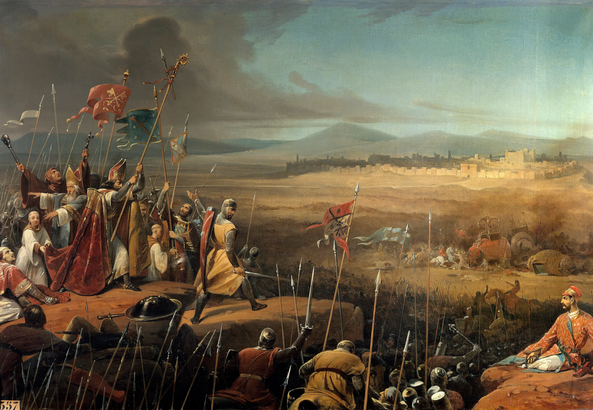
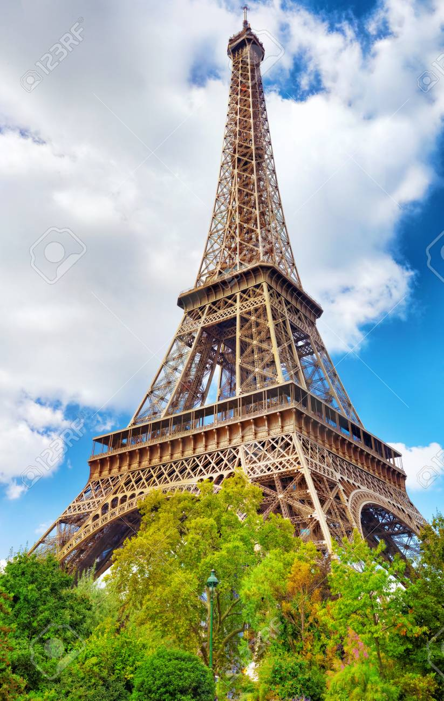

A história da França evoluiu da Gália celta e do domínio romano para o Reino dos Francos sob Carlos Magno, consolidando sua identidade nacional após a Guerra dos Cem Anos. O país atingiu o ápice do absolutismo monárquico com Luís XIV, mas as injustiças sociais e o pensamento iluminista culminaram na Revolução Francesa de 1789, que derrubou o Antigo Regime e espalhou os ideais de "Liberdade, Igualdade e Fraternidade" pelo mundo. Após enfrentar a Era Napoleônica, profundas instabilidades políticas e a devastação de duas guerras mundiais no século XX, a nação se reconstruiu sob a Quinta República, tornando-se uma das principais potências democráticas, culturais e econômicas da União Europeia.

Maior número de fusos horários: A França possui 13 fusos horários diferentes. Isso ocorre porque o país possui territórios ultramarinos espalhados pelo mundo (como a Guiana Francesa, ilhas no Caribe e no Pacífico). Por causa disso, diz-se que "o sol nunca se põe na França".
A Torre Eiffel muda de tamanho: Devido à expansão e contração térmica do ferro, a famosa torre encolhe de 4 a 8 centímetros durante o inverno e pode crescer e se inclinar até 18 centímetros em dias de calor intenso no verão.
Cultura dos Queijos: A França é o país que mais consome queijo no mundo, com mais de 1.600 tipos diferentes. Uma curiosidade é que o queijo não é apenas um aperitivo: ele é tradicionalmente servido após o prato principal, antes ou no lugar da sobremesa.
Proibido desperdiçar comida: Desde 2016, uma lei pioneira proíbe os supermercados de jogar comida no lixo. Todos os alimentos não vendidos que ainda estejam próprios para consumo devem ser obrigatoriamente doados para instituições de caridade.
